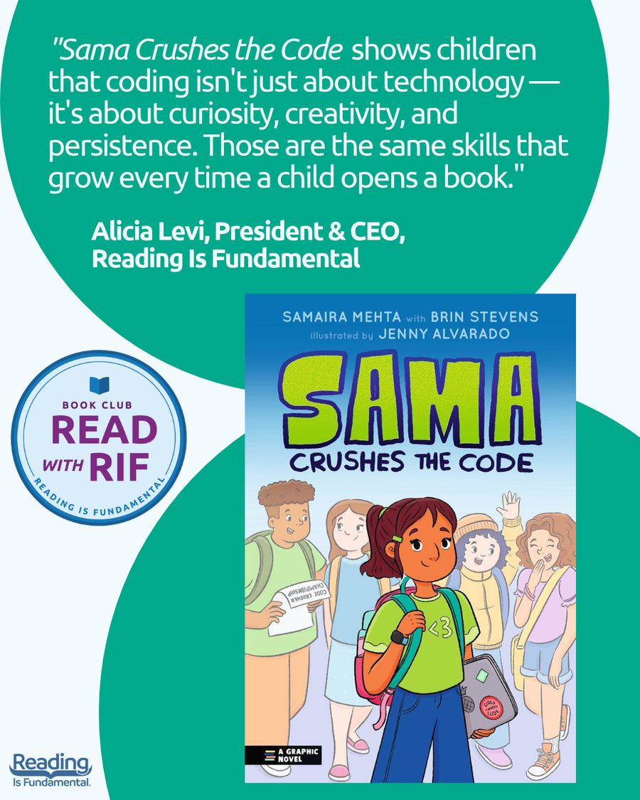

How marketing and RIF's literacy experts built three programs together
Reading Is Fundamental has a team of literacy experts and a library of free resources, but marketing was mostly passing their work along. I built a shared process with the content team: they own the expertise and accuracy, marketing owns the audience and reach. That partnership now powers three programs.
programs built on one shared process with the literacy team
typical turnaround for an expert review
Ask Karly TikTok engagement, against a 5.8% account average
Joyful Reader subscribers in 14 weeks, with no paid promotion
RIF's content team planned its resources on a spreadsheet editorial calendar. Each month, marketing took the recommended resources and shared them across email, social, and the website.
The content team had a clear strategy behind what it created. Marketing didn't have one for growing the audience around it. The two teams worked in sequence, not together, so RIF's best asset, its experts, rarely reached people directly.
| Program | Topic | Create | Review | Share |
|---|---|---|---|---|
| Ask KarlyShort-form video | MarketingSEO and audience questions, confirmed by Content | ContentWrites the script; the Literacy Services Manager records on camera | MarketingEdits and reviews before posting | MarketingTikTok and YouTube |
| The Joyful ReaderLinkedIn newsletter | MarketingAudience and search insight | MarketingWrites the first draft | ContentReviews for accuracy | MarketingLinkedIn, every other Wednesday |
| Read with RIFMonthly book club | ContentPicks an age-appropriate book | ContentBuilds discussion questions, activities, and resources | MarketingPrepares it for each channel | MarketingEmail, social, and the website |
The content team's first concern was reasonable: new formats sounded like new work on top of a full calendar of resources. If the partnership felt like a burden, it wouldn't last.
So I designed it to take as little of their time as possible. One shared Asana project replaced scattered emails and spreadsheets, so everyone could see what was due and when. Reviews were scoped to take about a day. And instead of separate shoots, we film two weeks of episodes in a single one-hour session.
The result was more visibility for the literacy team's work without a heavier workload, and that's what kept them invested.
the YouTube views of RIF's other 2026 videos, from real parent questions answered by a reading specialist
of subscribers senior-level or above, reading RIF's experts every other week
Case study →a free book club for kids: one book, with discussion questions and activities for families, teachers, librarians, and community groups

The clearest sign the partnership worked came from the literacy team. After seeing Ask Karly's results, RIF's VP of Literacy Programs and Research asked for a video series of her own, focused on families.
Marketing went from redistributing resources to building audiences around RIF's experts, and the experts went from handing work off to shaping what RIF publishes and how.
I designed the process: how topics are chosen, who owns each step, and how reviews stay fast. I set up the shared Asana project, and lead The Joyful Reader, publishing, and testing with our Marketing Coordinator.
Collaboration works best when each team does what it's best at. Experts shouldn't have to become marketers, and marketers shouldn't pretend to be experts. A clear division of roles and a fast, shared process let both do their best work.